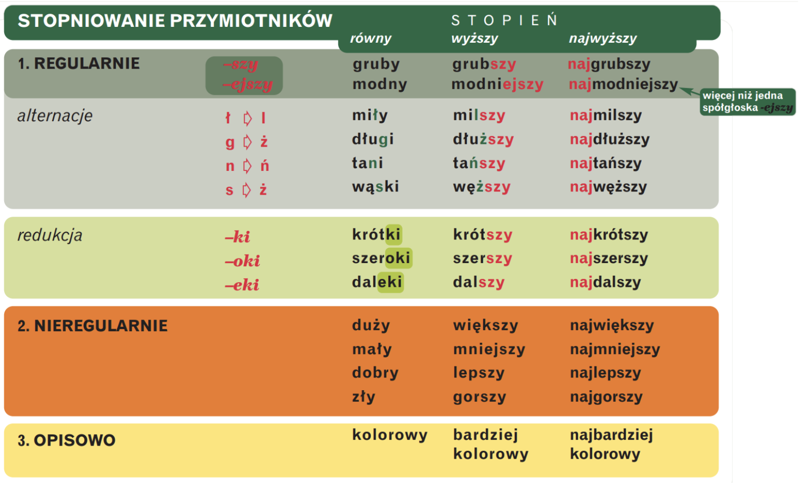
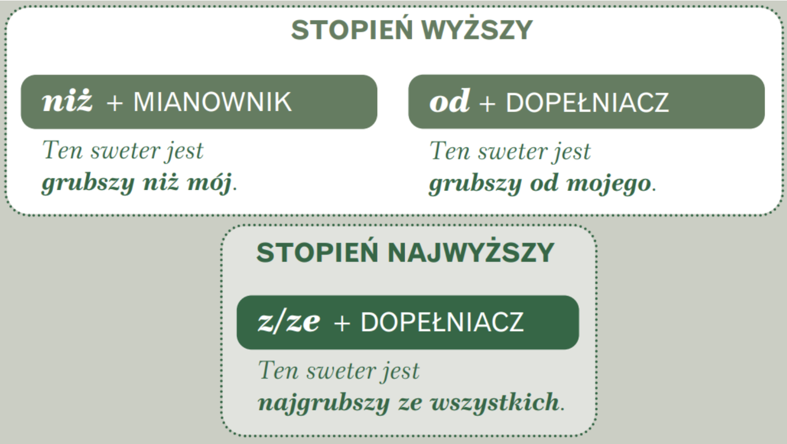

🇵🇱 PRZYMIOTNIK (прилагательное)
📌 1. Что такое przymiotnik?
Przymiotnik — часть речи, которая обозначает признак предмета (качество, свойство, принадлежность) и согласуется с существительным в:
- роде (rodzaj),
- числе (liczba),
- падеже (przypadek).
❓ Отвечает на вопросы:
- jaki? jaka? jakie? — какой? какая? какое?
- czyj? czyja? czyje? — чей? чья? чьё?
Степени сравнения прилагательных в польском языке (Stopniowanie przymiotników)
Как и в русском, в польском есть:
- Степень равная (stopień równy) → просто прилагательное
- Степень высшая (stopień wyższy) → например, моложе
- Степень наивысшая (stopień najwyższy) → самый молодой
✅ Как образуются степени?
1️⃣ Регулярное степенование (stopniowanie regularne)
Формула:
- Степень высшая: + sz / + ejsz
- Степень наивысшая: naj + форма высшая
Примеры:
- młody (молодой) → młodszy → najmłodszy
- ładny (красивый) → ładniejszy → najładniejszy
💡 Если основа заканчивается на -ki, -oki, -eki → часть отбрасывается:
- krótki → krótszy → najkrótszy (короткий)
- głęboki → głębszy → najgłębszy (глубокий)
- daleki → dalszy → najdalszy (далёкий)
2️⃣ Частые звуковые чередования при степеновании:
- ł → l: miły → milszy (милый → милее)
- g → ż: drogi → droższy (дорогой → дороже)
- s → ż: niski → niższy (низкий → ниже)
- n → ni: ładny → ładniejszy (красивый → красивее)
- w → wi: łatwy → łatwiejszy (лёгкий → легче)
⛔ Важно: -ższ читается как длинное "ш", например: "najmłodszy".
3️⃣ Нерегулярное степенование (stopniowanie nieregularne)
Здесь всё по-особенному, нужно запомнить:
- dobry → lepszy → najlepszy (хороший → лучше → лучший)
- zły → gorszy → najgorszy (плохой → хуже → худший)
- duży → większy → największy (большой → больше → самый большой)
- mały → mniejszy → najmniejszy (маленький → меньше → самый маленький)
4️⃣ Описательное степенование (stopniowanie opisowe)
-
Если прилагательное длинное (3+ слога или интернациональное), то используем:
- bardziej (более), najbardziej (самый), mniej (менее), najmniej (наименее)
-
Примеры:
- zaskoczony (удивлённый) → bardziej zaskoczony → najbardziej zaskoczony
- interesujący (интересный) → bardziej interesujący → najbardziej interesujący
-
Также так можно с другими прилагательными:
- chory → bardziej chory → najbardziej chory (больной)
- słony → bardziej słony → najbardziej słony (солёный)

